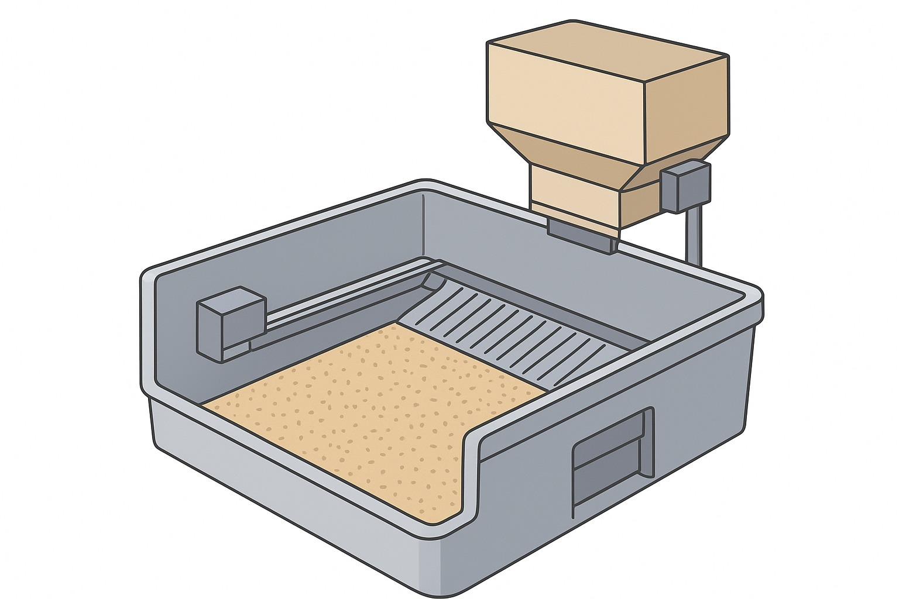
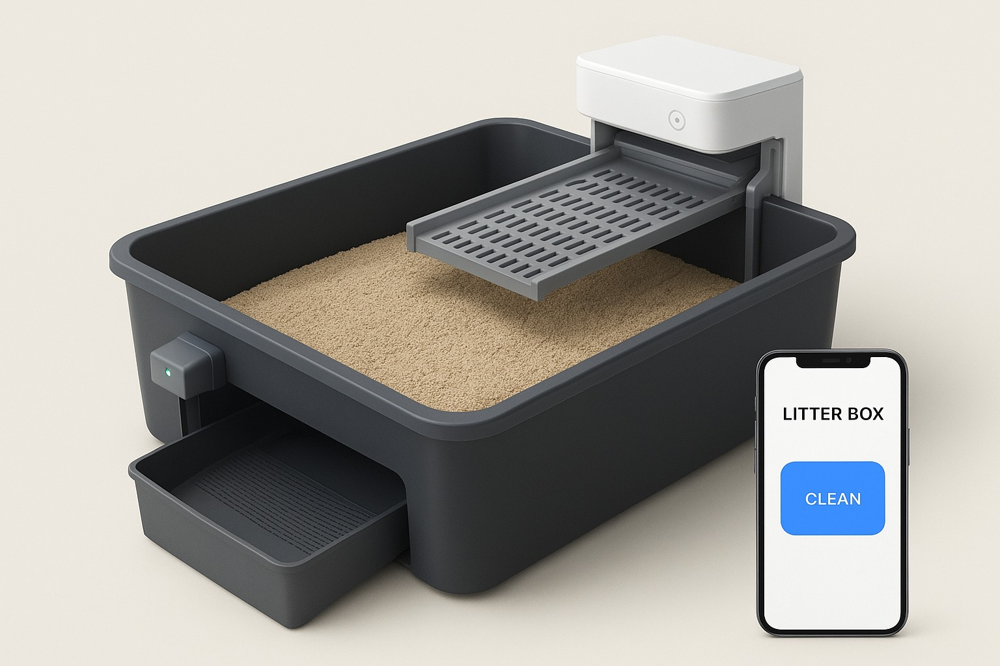

About LBCS
The LBCS (Litter Box Cleaning System) is built on a regular litter box. Using a pressure sensor and an ultrasonic distance sensor, the system detects when a cat enters the box, and after a short stay of a few minutes, it initiates an automatic spot-cleaning operation. Additionally, the user can perform a full litter replacement at the press of a button through the companion app. The system is built on a regular litter box and includes a sifting tray mounted on a rail that moves along the box using a motor, a waste outlet for clumps filtered from the litter during spot-cleaning, a removable bottom for disposing of all used litter, and a funnel for fresh litter that is operated by the user through the app. The system operates in two modes: Automatic Spot-Cleaning: Using the pressure and ultrasonic sensors, the system detects the cat's entry, and after a brief delay of a few minutes, it drives the sifting tray along the rail, filtering waste from the litter and expelling it through the waste outlet. Full Litter Replacement: When the user selects this function via the companion app, the bottom of the litter box opens, allowing used litter to fall into a pull-out drawer beneath the box, which then closes. Once the bottom is closed, the funnel dispenses a predetermined amount of fresh litter back into the box. The funnel is a container that the user needs to refill periodically, providing a consistent amount of fresh litter each time.

